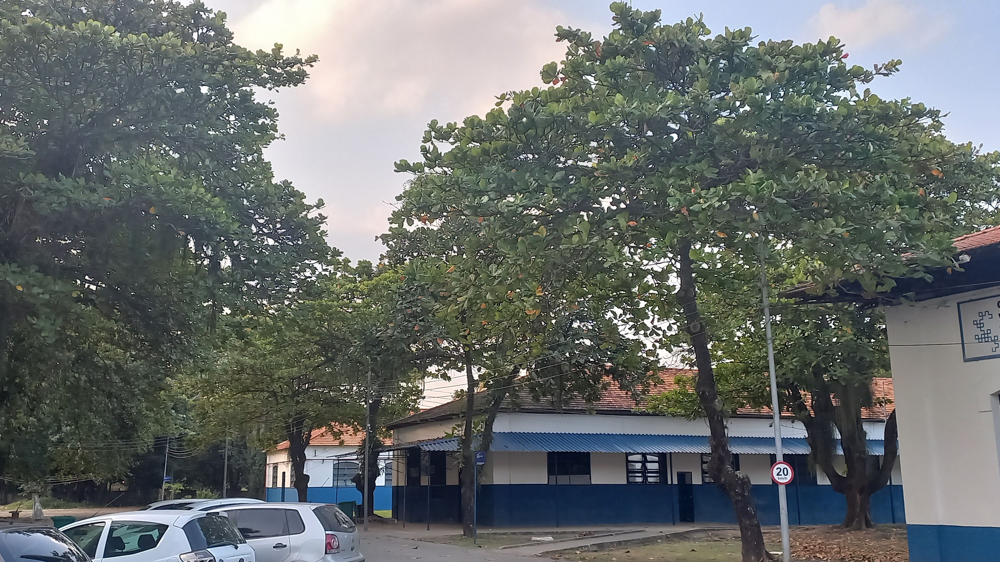
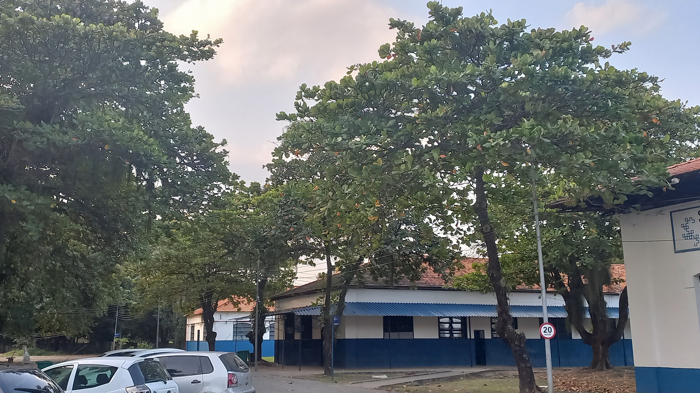

- Modo Escuro

- Idioma


 



Muito se fala da credibilidade da ETESC. Sempre correm os mesmos boatos pela zona oeste: 'Na FAETEC ninguém estuda!', 'Lá nem tem professor', 'Vive de greve!', 'Essa rede é uma bagunça!'. É tudo mentira! A Escola Técnica Estadual Santa Cruz existe desde setembro de 1998. Antes de sua fundação o espaço era um matadouro bovino e desde que surgiu alavancou a qualidade de ensino regular/técnico do Rio de Janeiro. Daqui, já surgiram grandes profissionais das mais variadas áreas de atuação: pessoas que contribuíram para o desenvolvimento da nação brasileira. Assim como eles, você deseja ser uma pessoa renomada??? Se sim, acompanhe a trajetória dos egressos de sucesso da escola clicando aqui!